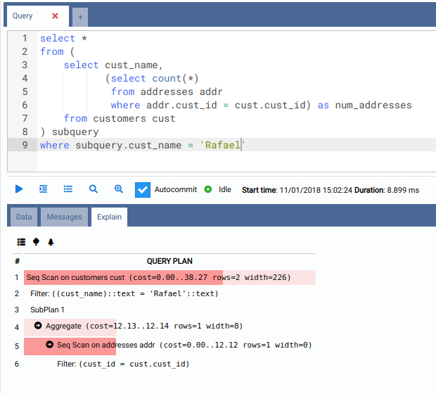
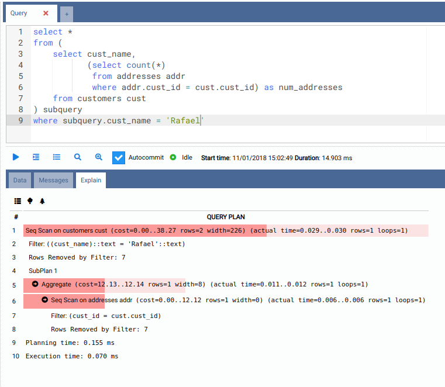
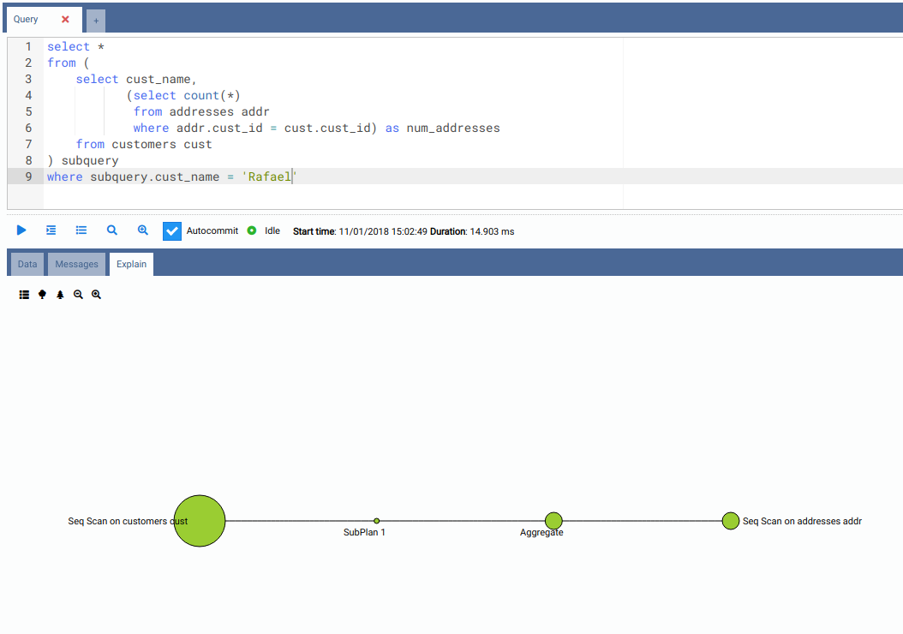
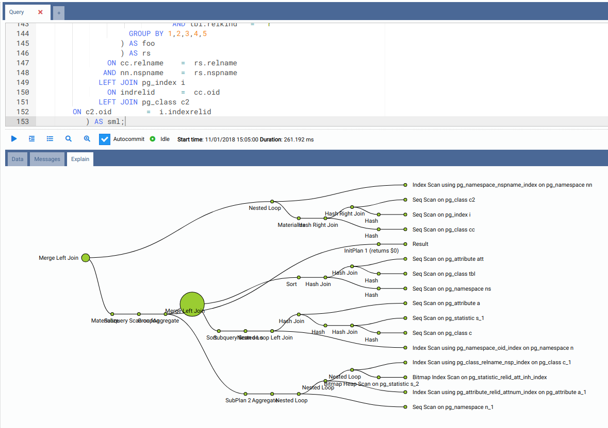

Abfragepläne visualisieren
OmniDB verfügt über eine sehr nützliche Funktion: die grafische Visualisierung von Abfrageplänen. Dies kann beim Schreiben oder Optimieren von Abfragen hilfreich sein, da Sie damit Engpässe in der Leistung Ihrer SQL-Abfrage leicht erkennen können.
Für diese Funktion zeigt der innere Tab SQL Query zwei Schaltflächen: Explain und Explain Analyze.
Textuelle Visualisierung
Wenn Sie auf die Schaltfläche Explain klicken, führt OmniDB einen EXPLAIN-Befehl für Ihre Abfrage aus. Die anfängliche Visualisierung ist textuell und zeigt genau die Ausgabe des EXPLAIN-Befehls, jedoch mit farbigen Balken, die die geschätzten Kosten darstellen. Je höher die Kosten, desto dunkler und breiter ist der Balken.

Wenn Sie auf die Schaltfläche Explain Analyze klicken, führt OmniDB einen EXPLAIN ANALYZE-Befehl für Ihre Abfrage aus. Beachten Sie, dass dieser Befehl die Abfrage tatsächlich ausführt. Die textuelle Visualisierung zeigt zudem viel mehr Informationen an, und die Kosten sind keine Schätzungen wie bei denen des EXPLAIN-Befehls — es sind tatsächliche Kosten.

Baum-Visualisierung
Beide Modi — Explain und Explain Analyze — können die textuelle Ausgabe auch grafisch als Baumdiagramm darstellen. Jeder Kreis repräsentiert einen vom Abfrageplan ausgeführten Knoten; je größer der Kreis, desto höher die Kosten.

Wenn Abfragen immer komplexer werden, kann auch ihr Abfrageplan sehr komplex sein. Bei solchen Abfragen (wie der check bloat-Abfrage, die wir unten ausgeführt haben) kann die Baum-Visualisierung sehr interessant sein:

Die Abfrageplan-Visualisierungskomponente ermöglicht es Ihnen, einfach zwischen textueller und zwei Baum-Visualisierungen zu wechseln, die hinein- und herausgezoomt werden können.